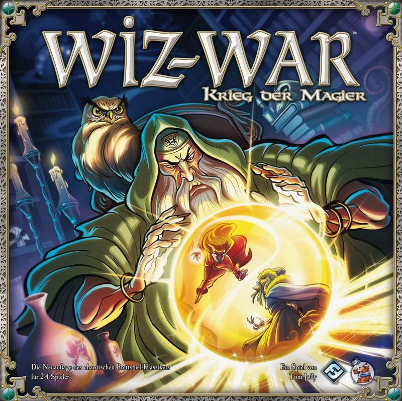

von Michael Wilhelm

Wiz-War – Krieg der Magier (© Heidelberger Spieleverlag)
(mw) – Im Jahre 1983 erschien die erste Auflage dieses »beer and pretzels«-Spieles von Tom Jolly auf damals selbstkopierten Papier. Mit einem »beer and pretzel«-Spiel ist im Gegensatz zu den eher ernst gemeinten und wenig glücksbasierten Eurogames leichtere und lustigere Spielekost gemeint. Ganz banal ist Wiz-War aber definitiv nicht, wie wir noch sehen werden.
Darum geht es: Nach dem Tod des Gildenmeisters streiten die Magier des Ordens um die freigewordene Position. Und dabei sind alle magischen Mittel erlaubt, bis nur noch einer übrig ist, seine Nachfolge anzutreten. Zwei bis vier Magier treten mit Zaubersprüchen bewaffnet in diesem chaotischen Wettstreit um Schätze und das nackte Überleben an.
Die vorliegende deutsche Ausgabe stellt die Übersetzung der mittlerweile achten englischen Auflage von Wiz-War dar. Da hat sich inzwischen offensichtlich einiges getan, denn der üppige und farbenfrohe Inhalt der Schachtel kann sich sehen lassen. Neben vier zweiseitig bedruckten farbigen Spielplanteilen finden wir vier Figuren für Magier (dabei zwei weibliche und zwei männliche) und fünf für verwandelte Magier, vier Lebensräder, mit denen die 20 Lebenspunkte der Magier festgehalten werden, ganze 139 Pappmarker (für Portale, Schätze, Objekte wie Mauern, Dornenbüsche oder magische Gegenstände) und 168 Magiekarten (je 24 für die 7 Magieschulen).
Das Komplizierteste am Spielaufbau ist das Sortieren der vielen Pappmarker, was aber durch die dem Karton beiliegenden Plastiktütchen deutlich erleichtert wird. Die Größe des Spielfeldes (der Kampfarena) ist von der Spielerzahl abhängig. Je Spieler wird eines der 5 x 5 Felder großen Spielplanteile benötigt. Auf denen befinden sich neben einem mittig gelegenen Startfeld noch zwei Markierungen für die Schätze des Magiers und labyrinthartig verzweigte Wände. Zu Beginn des Spieles wird jedem Spieler eine Farbe (rot, blau, gelb und grün) zugeordnet und dann die entsprechenden Startfelder ausgelegt. Beim Kampf zu zweit hat man also eine 10 x 5 messende Arena, zu viert 10 x 10, und im Spiel zu dritt eine L-förmige Variante, wo ein Viertel der 4-Spieler-Arena fehlt. Wichtig ist noch, dass gegenüberliegende Spielplanränder mittels Portalen verbunden werden, was dazu führt, dass das Spielfeld immer eng und klein ist, und jederzeit aus allen Richtungen mit Angriffen zu rechnen ist.
Dann einigt man sich, entweder zufällig oder nach Absprache, welche drei Zauberschulen neben den Zaubertricks noch verwendet werden sollen: Bei Alchemie geht es um die Herstellung und Nutzung von magischen Steinen. Mit Beschwörung werden unbelebte Objekte wie Mauern oder Dornbüsche (vor allem als Hindernisse) in die Arena gezaubert. Elementarmagie beschwört mit meist offensivem Charakter Blitz, Feuer und Kälte. Mittels Geistesbeeinflussung können Zauber aus den Gedanken anderer Magier gelöscht oder sogar gestohlen werden. Durch Verwandlungszauber kann sich ein Magier in andere Kreaturen (z.B. Golem, Schleimmonster oder Werwolf) verwandeln. In der Thaumaturgie finden sich verschiedenartige Zauber und vor allem magische Energie. Auch durch die verschiedenen Zauberschulen ist jede Menge Abwechslung garantiert, insbesondere wenn verschiedene Spieler sogar verschiedene Schulen benutzen.
Nachdem jeder Spieler fünf Karten vom (gut gemischten) Magiestapel gezogen hat, kann es endlich losgehen. Reihum kommt ein Magier nach dem anderen an den Zug. Zu Beginn des Zuges vergeht die Zeit, das heißt, dass zeitlich begrenzte Zaubereffekte vergehen, Energiemarker von Zaubern oder Betäubungsmarker von Magiern entfernt werden. Ansonsten besteht der Zug aus Bewegung und Magie, und Abwerfen und Nachziehen. In der Phase Bewegung und Magie kann sich ein Magier (normalerweise bis zu 3 Felder weit) bewegen, einmalig angreifen (entweder körperlich durch Faustschlag oder mittels Angriffszauber) und weitere Magiekarten ausspielen oder benutzen. Abschließend können noch beliebig viele Handkarten abgeworfen und bis zum Handkartenlimit (normalerweise 7) nachgezogen werden.
Das Spiel endet, sobald ein Spieler zwei Siegpunkte hat oder der einzige Überlebende ist. Siegpunkte gibt es für das Töten anderer Magier oder für das Stehlen eines gegnerischen Schatzes, sobald man ihn in der eigenen Basis (wo er aber auch wieder weggeholt werden kann) abgelegt hat. Damit sind wir auch bei den verschiedenen Siegbedingungen, die je nach Spielerzahl, aber auch innerhalb einer Spielergruppe zu ganz unterschiedlichen Spielverläufen führen dürften. Beim Spiel zu zweit wird es meist auf ein konventionelles Duell bis zum Tod hinauslaufen. Auch das ist ein taktisch spannender und kurzweiliger Spaß. Zu dritt oder viert wird es aber wirklich chaotisch, weil dann jederzeit damit gerechnet werden muss, dass offensives Vorgehen für Angriffe auf die eigenen Schätze ausgenutzt wird. Bei Wiz-War ist alles möglich, auch kurz- oder langfristige Allianzen, vorsichtiges Abtasten oder waghalsige Attacken. Eine wirklich zum Erfolg führende Strategie gibt es nicht, wobei wir wieder bei »beer and pretzels« wären. Der chaotische Spaß insbesondere von Runden mit drei oder vier Spielern lädt dazu ein, in geselliger Runde begangen und nicht zu ernst genommen zu werden, auch wenn Verrat und Niederlage manchmal schmerzlich sein kann.
Bei der Spieldauer sollte man eine gute Stunde einplanen, bei drei oder vier Spielern vielleicht auch mal etwas mehr. Für eine ausreichende Abwechslung ist aber dank der beidseitig bedruckten Spielplanteile und der Auswahl an Zauberschulen gesorgt. Die erste Erweiterung »Fiese Flüche« ist auch schon im Handel.
Fazit: Wiz-War macht wirklich Spaß, und zwar am meisten, wenn man einfach drauflosspielt und sich nicht zu sehr grämt, wenn der eigene Magier frühzeitig leblos auf dem Boden der Arena liegt, ganz egal, ob man sich in einem Zweispieler-Duell oder im chaotischen Magierkrieg für drei oder vier Spieler die Zaubersprüche um die Ohren ballert.
Wiz-War – Krieg der Magier
Brettspiel für 2 bis 4 Spieler ab 14 Jahren
Tom Jolly
Heidelberger Spieleverlag 2013
EAN: 4015566012110
Sprache: Deutsch